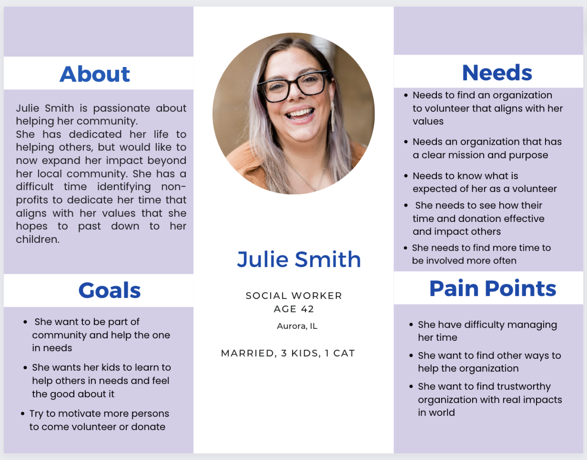
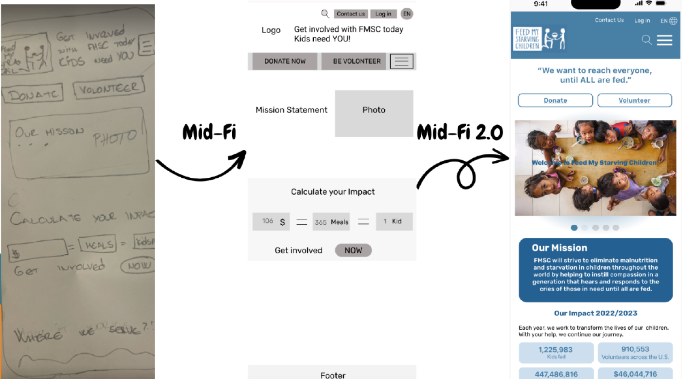
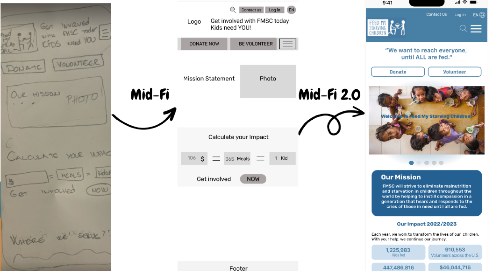

Feed my Starving Children

Redesign the website so the user can have a better point of view of the mission, and impact of the organization.
Group members: Zorka Pretrova,Jimena Olivares Dora Montes, Candy Melara I served as a UX/UI designer. Working individually and supporting my group with research, user interviews, prototyping, and validation
We was working on this project for 3 weeks .
People are usually inclined to help those in need. So, they usually look for non-profit organizations that align with their values. Helping “Feed My Starving Children” might prove challenging for those looking to contribute given that information about the organization and who they help is not that easy to find.
Redesign their website so that it showcases its mission and prominently displays those who they have helped indicating how easy it is to get involved and help those in need.

We did the Heuristic Analyses following the rules, also check the LATCH Principles, and in the end we did Usability Issues and Recommendations Hierarchy issues:
We decided to do the Competitor Analyses, and we did direct competitors (Feeding America and Northern Illinois Food Bank) and indirect Competitors (Habitat for Humanity and Big Brothers & Big Sisters of America). They help us to discover their Main Strengths and Competitors' Pain Points
As a group we decided to use the Method of Interview 1:1 because we were thinking the best way to get the user insides and collect qualitative data was if we went and speck with the user directly.
We create Interview plan with Interview questions and with Objectives we want to discover:
,,I wish non profit sides had clearer instruction on how to volunteer”

,,It deters me from website is when i am unable to find information in an easy way”
,,I like to see how my involvement with non profit impact others”
,,I know that my volunteer work is impactful as I know that it is helping the less fortunate”
,,I contribute to the organization by donating my time”
Affinity diagram
After synthesizing our data we created the Empathy map and from there our User Persona was created. Please meet Jolie Smith with her Paint Point, Needs, and Goals.
Julie is trying to expand her impact in the community by finding an organization that she trusts where she can see that her contributions make an impact. She wants to be able to go with her kids as often she can. Julie heard about Feed My Starving Children, and she is trying to contact the organization to see in what ways she can contribute. She visits the website and starts to read the Mission and Impact statements of the organization to get an idea of the work that they are doing and to see the ways that she can get involved.
Julie wants to identify a non-profit that fulfills her goal of wanting to experience community involvement in addition to demonstrating to her kids that helping those in need is gratifying.

During the research interviews, we discovered that our users are passionate about volunteering but have a difficult time identifying non-profits to dedicate their time to that align with their values. Given their limited time, they would benefit from finding an organization that displays a clear mission statement describing what the organization does, who the organization helps, and what difference it makes in the community. How might we help make it easier for them to decide to help and make a long-term commitment
We might be able to make it easier for people who want to volunteer or donate to focus on “Feed My Starving Children” by redesigning their website so that people can easily navigate it and find the information they need in order to choose the activities that they want to volunteer for or donate in a more permanent basis. By doing this, “Feed My Starving Children” will attract more people to its website increasing their volunteers and donors.
Ensure that our users can easily locate
Based on 5 user Card sorting I designed the Site map for my feature redesign. The interesting part was when we decided to rename the Feature Main names for more approachable and clarifying titles

Low Fidelity
 

We made 5 Usability testing
The past few weeks have been exciting and very intense. Out group did a terrific job. We worked very well together. It was a joy!
Time passed me by very quickly. I feel that the Feed My Starving Children website redesigned has taught us a great deal. We have sharpened my design skills while at the same time we are getting better at using the tools, specially Figma. As it is now the norm, we feel that we needed more time to finish what we had envisioned. However, we are happy with what we did in such a short amount of time. We are thankful to have worked with an outstanding group of classmates. We wish we could have iterated our prototypes more to make them better. But since this work never ends, we are happy with where they are today.
Fully develop the other ways to give ( Donate and FMSC shop)\ More research and user tastings Being able to interview the FMSC executive stuff ( we try) Sending out the qualitative Survey for more insights
Finalize our Color scheme and Typography earlier
Keep on learning! It will only get better!